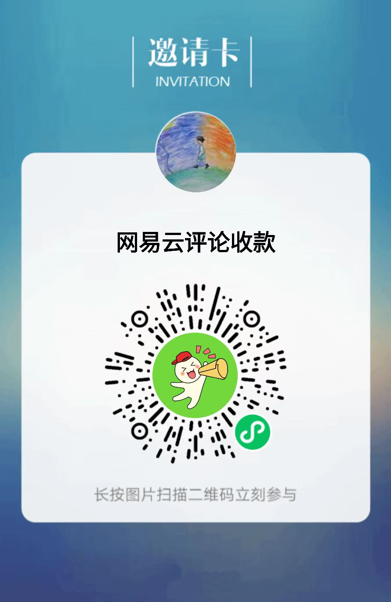

请选择要查找的数据源
推荐从听歌排行找TA写过的评论，查出率达80%
-
推荐
听歌排行
从听歌排行前100首里找TA的评论
需TA开放查看权限 -
TA的歌单
从TA的歌单里找TA写过的评论
TA创建的歌单、你收藏的TA的歌单 -
别人的歌单
从别人的歌单里找TA写过的评论
别人创建的歌单、你们的共享歌单
{{ queryTip }}
查询出错：{{ queryErrorTip }}
{{ pausing ? '已暂停，可关闭本页面下次继续查' : '查询中...请勿刷新或关闭本页面和app黑窗口终端，windows用户请操作：设置-系统-电源与睡眠-永不睡眠' }}
由于网易检测机制，若出现“网络太拥挤,请稍候再试!”，请点击“出错重试”
{{ queryData.songsTotal }} 首
{{ queryData.commentTotal || '--' }} 条
{{ queryData.commentSearch || '--' }} 条
{{ queryData.time || '--' }}
{{ queryData.money || '--' }} 元
{{ queryData.commentTaTotal }} 条
-
线程{{ it + 1 }}
-
{{ song.name }} {{ song.progress }}%查询出错：{{ song.error }}
-
{{ payTip }}
查询出错：{{ payErrorTip }}
{{ queryTip }}
查询出错：{{ queryErrorTip }}
1. 共找到 {{ queryData.commentTaTotal }} 条评论，请支付 ¥{{ queryData.money }} 查看结果
-
方式一：加我微信支付
-
方式二：自助付款(多退少补)

放弃后将清空查询结果，谨慎操作！
{{ queryTip }}
查询出错：{{ queryErrorTip }}
-
{{ song.name }} 歌手：{{ song.author }} 歌曲id: {{ song.id }}
-
{{ pc.user.nickname }}：{{ pc.content || pc.richContent }}{{ cc.user.nickname }}：{{ cc.content || cc.richContent }}{{ pc.timeStr }} {{ pc.ipLocation.location }} 评论id: {{ pc.id }} ({{ pc.likedCount }}) 回复
-
请截图保存，刷新后不可恢复！